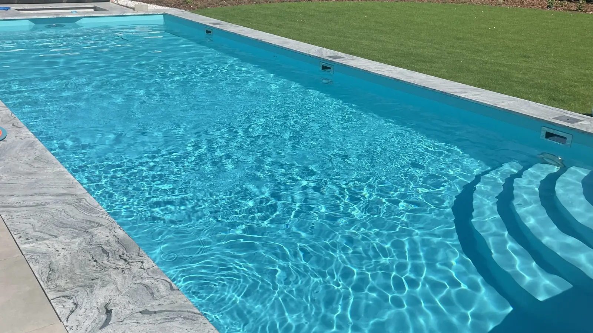
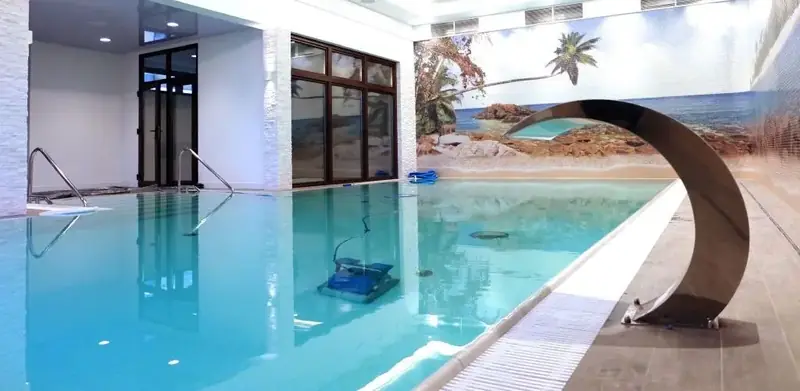
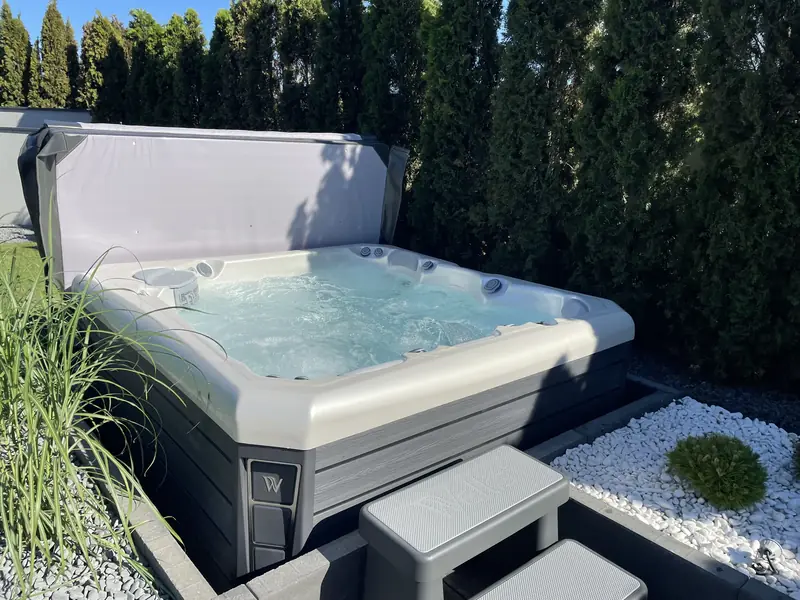
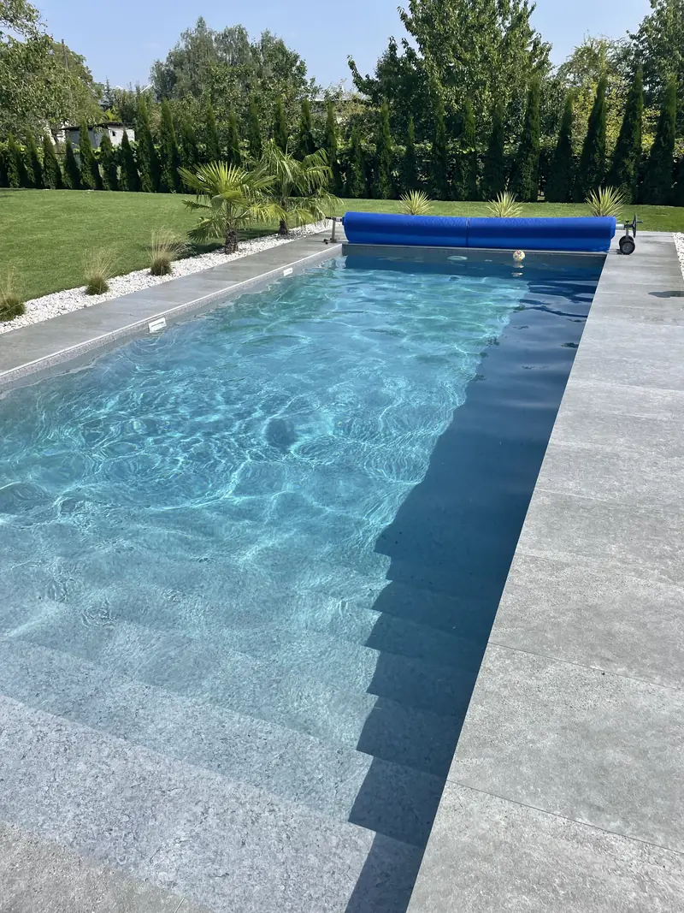
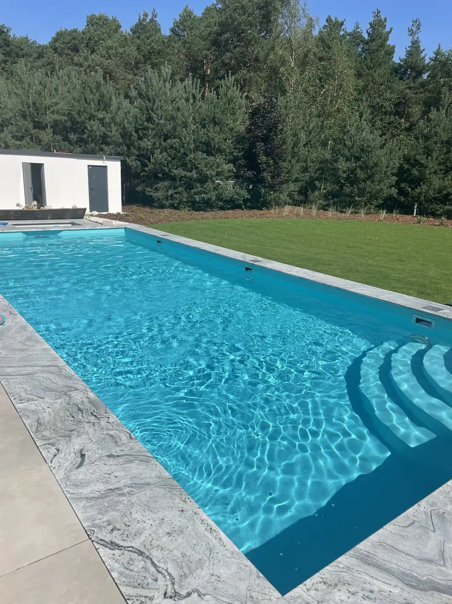
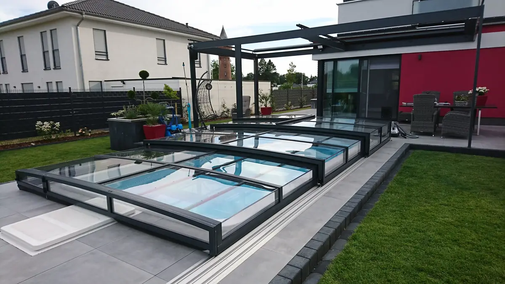
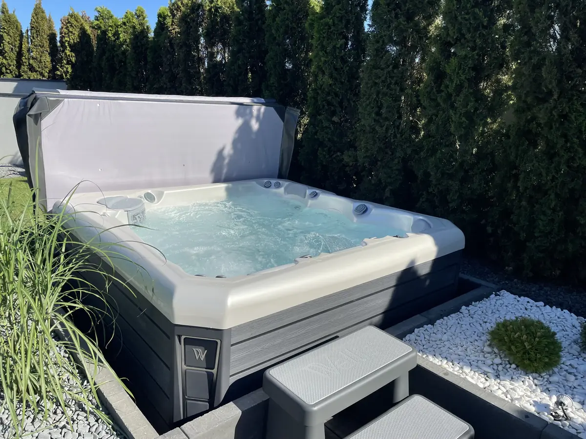
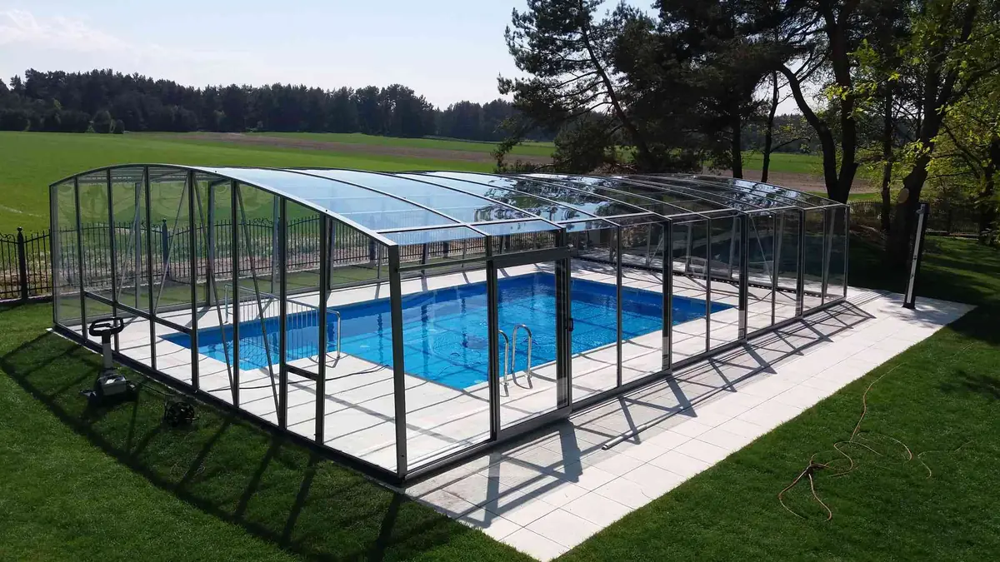
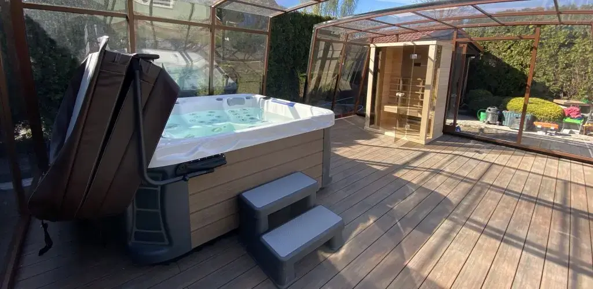
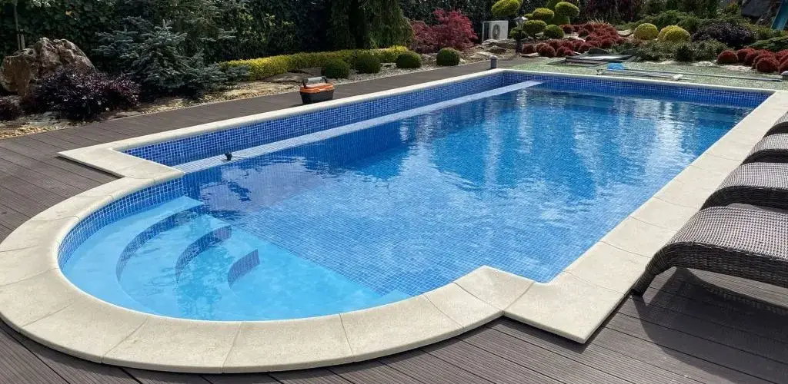

Budowa basenów ogrodowych i hotelowych - od projektu po czystą taflę wody
Rodzinna firma Skimmer z Wierzyc koło Gniezna. Projektujemy i budujemy baseny, montujemy zadaszenia i wanny spa, a potem serwisujemy i remontujemy, żeby woda była czysta przez cały sezon.
Zapytaj o swój basenWszystko do basenu w jednym miejscu
Budujemy baseny prywatne i hotelowe, sprzedajemy cały asortyment do basenów, zadaszenia i wanny spa. Po budowie zostajemy z klientem: serwis i remonty robimy sami.
Baseny ogrodowe
Projekt, budowa i wyposażenie basenu przy domu, dopasowanego do ogrodu i sposobu korzystania.

Baseny hotelowe i wewnętrzne
Baseny w budynkach, hotelach i strefach wellness, z technologią uzdatniania wody.
Zadaszenia basenowe
Niskie i wysokie zadaszenia teleskopowe, które przedłużają sezon i chronią wodę.

Wanny SPA i sauny
Wanny spa do ogrodu i na taras oraz sauny różnego rodzaju, z dostawą i montażem.

Wyposażenie i akcesoria
Przykrycia, filtracja, pompy, oświetlenie i akcesoria, czyli cały asortyment do basenu.
Serwis i remonty basenów
Serwis i naprawy basenów oraz remonty starszych basenów. Fachowa porada przez cały rok.
Jeden wykonawca od pierwszej rozmowy do serwisu
- Doradztwo i projektRozmawiamy o tym, jak będą Państwo korzystać z basenu, i dobieramy wielkość, kształt i technologię.
- Budowa i wyposażenieBudujemy basen i montujemy całe wyposażenie: filtrację, oświetlenie, przykrycie.
- Zadaszenie, spa, saunaNa życzenie dokładamy zadaszenie, wannę spa albo saunę, żeby całość tworzyła jedną strefę.
- Serwis przez cały rokPo oddaniu basenu zostajemy z Państwem: serwis, porady i remonty, kiedy będą potrzebne.

Zadaszenia basenowe niskie i wysokie
Zadaszenie teleskopowe chroni wodę przed liśćmi i chłodem, a zsunięte otwiera basen na słońce. Niskie zadaszenie prawie znika w ogrodzie, wysokie pozwala swobodnie chodzić wokół basenu. Dobieramy je do wymiarów basenu i układu ogrodu.
Zapytaj o zadaszenieNasze realizacje





Rodzinna firma z tradycjami
Skimmer to rodzinna firma basenowa, która od 20 lat zajmuje się projektowaniem, budową i sprzedażą basenów kąpielowych, ogrodowych, hotelowych i wewnętrznych. Każdego klienta prowadzimy indywidualnie przez cały proces, od decyzji po odbiór, a potem służymy poradą i serwisem przez cały rok.
- Telefon571 333 221
- E-mailbiuro@basenyskimmer.pl
- Adresos. Leśne 4, 62-262 Wierzyce